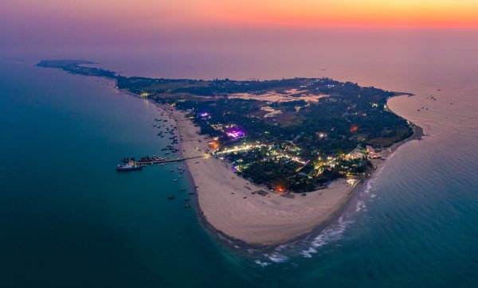
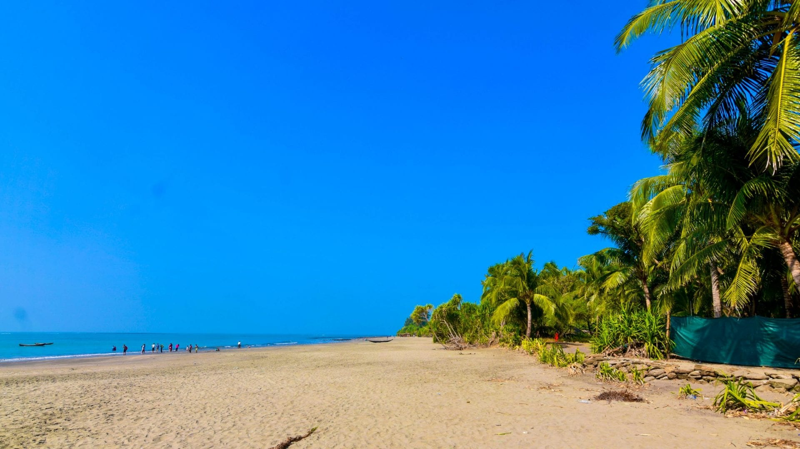
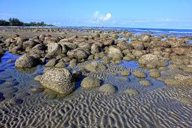

Saint Martin is a small coral island in the north-eastern part of the Bay of Bengal, about 9 km south of the tip of the Cox's Bazar-Teknaf peninsula, and forms the southernmost part of Bangladesh.
Every year many people visit Saint Martin to enjoy in this coral island and detox their mind.



As entry in Saint Martin has been limited by the Govt. so you must have to apply for a travel pass. To apply for a travel pass visit: